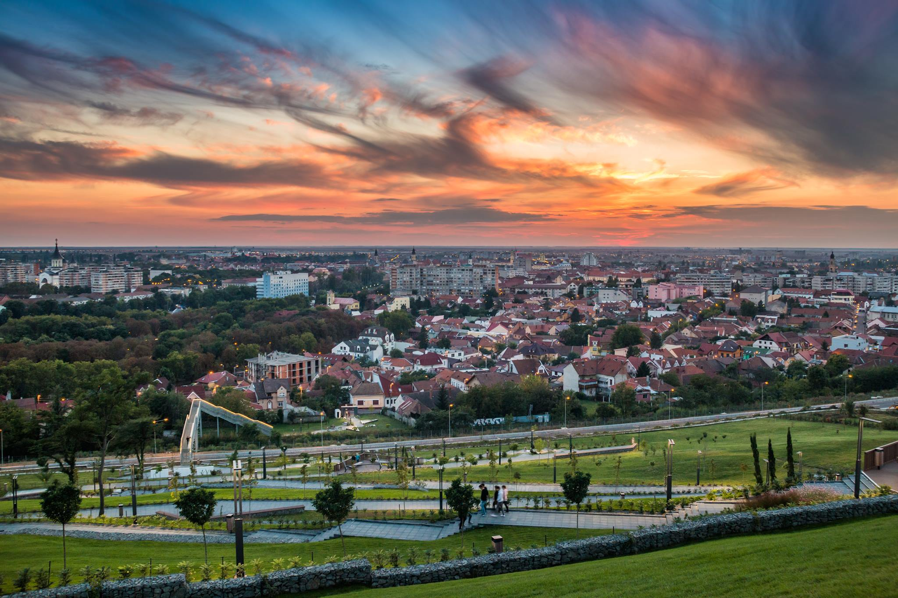

Dealul Ciuperca
Descriere
Cunoscut și ca ”Dealul Oradei” este unul dintre simbolurile orașului Oradea. Vizitatorii au parte de băncuțe, pergole, zone de relaxare, amfiteatru în aer liber, o cafenea și cinci puncte de belvedere legate între ele cu o alee și mult spațiu verde.